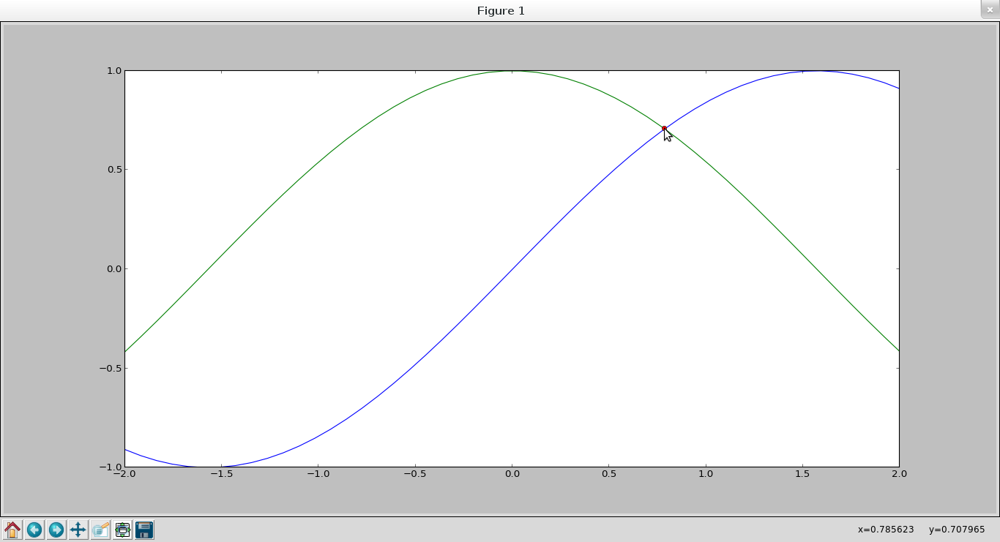

Graficar la intercepción de 2 funciones
Posted on vie 15 febrero 2013 in Tutorial Python • 1 min read
En este artículo se explica como encontrar la intercepción de 2 funciones, en este caso una función senoidal con una cosenoidal.
El artículo se basa en uno en Inglés que se llama "How to find the intersection of two functions ".
La gráfica mostrará la intercepción de las funciones sin(x) y cos(x) desde el valor inicial de x igual a cero. Se utilizará la función fsolve la cual devuelve la raíz de una ecuación (no lineal ) definida por func(x) = 0.
A continuación se muestra el código:
```python
!/usr/bin/env python
from scipy.optimize import fsolve
Importar pylab
import pylab
Importar numpy
import numpy
Se define la funcion que calcula la intercepcion
de 2 funciones.
def EncontrarIntercepcion(fun1,fun2,x0): #Se usa la función lambda de la diferencia de ambas funciones con
#valor inicial x0
return fsolve(lambda x : fun1(x) - fun2(x),x0)
if name == 'main':
#se calcula el resultado de la intercepcion de 2 funciones
#sin y cos con valor inicial de 0.
resultado = EncontrarInterseccion(numpy.sin,numpy.cos,0.0)
#se genera el rango de -2 a 2.
x = numpy.linspace(-2,2,50)
#Se genera la grafica,
pylab.plot(x,numpy.sin(x),x,numpy.cos(x),result,numpy.sin(result),'ro')
#se muestra la grafica.
pylab.show()
```
La gráfica se muestra a continuación:

La función seno se encuentra en color azul,la gráfica del coseno en color verde y la intercepción es un punto de color rojo.
¡Haz tu donativo! Si te gustó el artículo puedes realizar un donativo con Bitcoin (BTC) usando la billetera digital de tu preferencia a la siguiente dirección: 17MtNybhdkA9GV3UNS6BTwPcuhjXoPrSzV
O Escaneando el código QR desde la billetera: